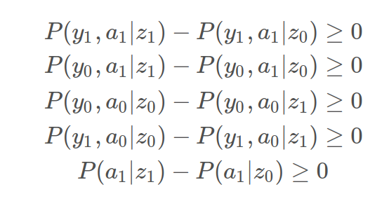
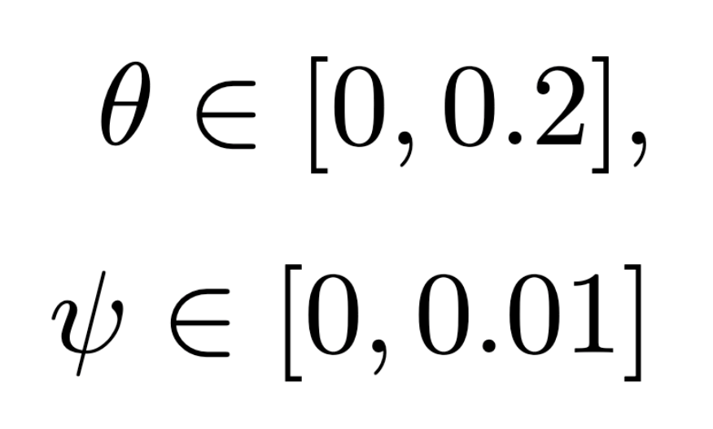
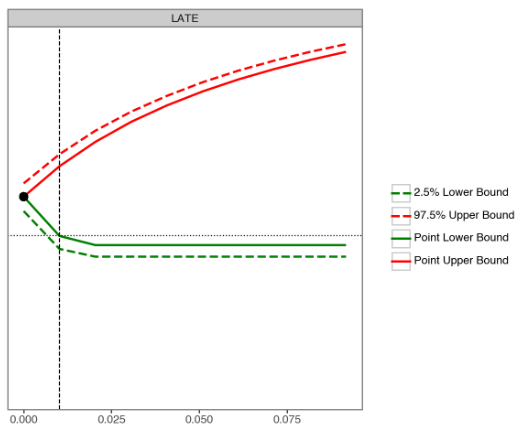
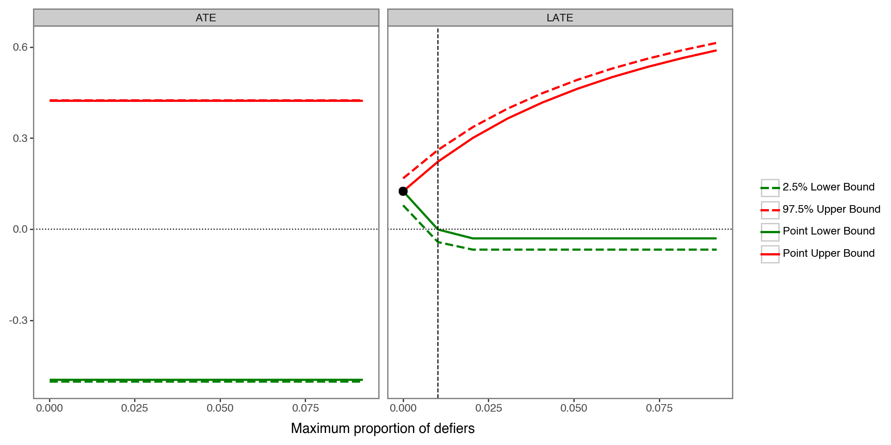
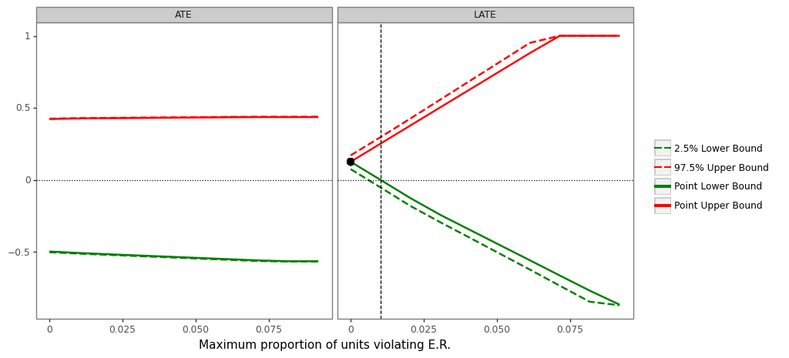
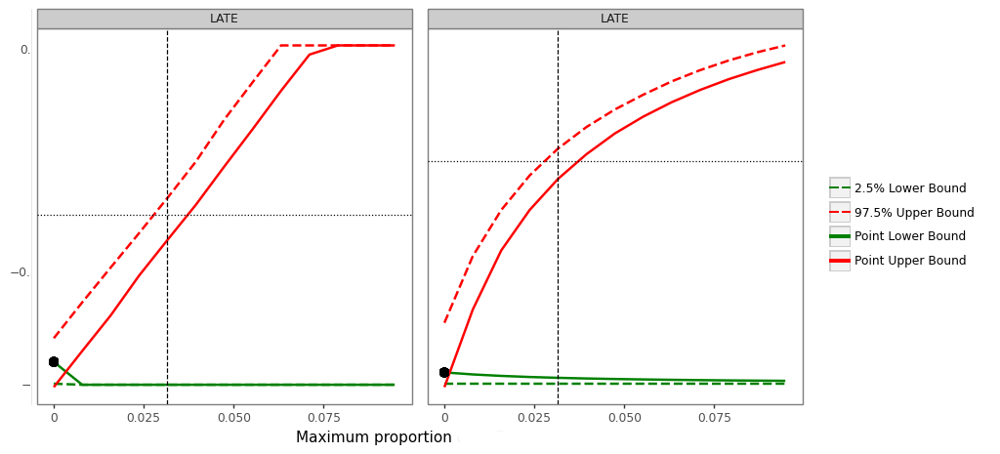
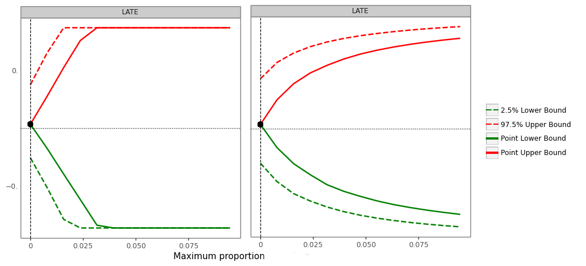

<h1 style="font-size: 220%; text-align: left; margin-bottom: 20px">Evaluating the Validity and Robustness of <br> Instrumental-Variable Analyses</h1> <br><br><br><br><br><br><br> <span class="today" style="margin-bottom: 20px"></span> <br> <div> <div style = "font-size: 20pt; float: left;"> Kai Cooper .tiny.highlight[**Penn**]<br> Guilherme Duarte .tiny.highlight[**Penn**]<br> Luke Keele .tiny.highlight[**Penn**]<br> </div> <div style = "font-size: 20pt; float: right;"> Dean Knox .tiny.highlight[**Penn**]<br> Kennedy Mattes .tiny.highlight[**Harvard**]<br> Jonathan Mummolo .tiny.highlight[**Princeton**]<br> </div> </div> --- # The Problem - Is voting habit forming? (Davenport et al., 2010) - $Y$: outcome (voting at $t=2$) - $A$: treatment (voting at $t=1$) - $U$: unobserved confounder (e.g. political interest) - $Z$: instrument (encouragement to vote at $t=1$) - We want to investigate the effect of $A$ on $Y$: <div style = "text-align: center; position: absolute; top: 40%; left: 20%;"> <svg id ="fg3iv" width="800" height="800"> </svg> </div> --- # IV Theory Review 1. **Exogeneity**: $(Y(a), A(z)) \perp\kern-5pt\perp Z$: - <span style = "color: red">Violation:</span> Confounding between $Z$ and $Y$ <div style = "text-align: center; position: absolute; top: 40%; left: 20%;"> <svg id ="sg1iv_vio" width="800" height="800"> </svg> </div> --- # IV Theory Review 1. **Exogeneity**: $(Y(a), A(z)) \perp\kern-5pt\perp Z$: - <span style = "color: black">Violation:</span> Confounding between $Z$ and $Y$ 2. **Exclusion restriction**: $Y(a,z) = Y(a)$ - <span style = "color: red">Violation:</span> Direct arrow from $Z$ to $Y$ <div style = "text-align: center; position: absolute; top: 40%; left: 20%;"> <svg id ="sg2iv_vio" width="800" height="800"> </svg> </div> --- # IV Theory Review 1. **Exogeneity**: $(Y(a), A(z)) \perp\kern-5pt\perp Z$: - <span style = "color: black">Violation:</span> Confounding between $Z$ and $Y$ 2. **Exclusion restriction**: $Y(a,z) = Y(a)$ - <span style = "color: black">Violation:</span> Direct arrow from $Z$ to $Y$ 3. **No defiers**: $A(Z=1) \geq A(Z=0)$ - <span style = "color: red">Violation:</span> Units challenge their assignment <div style = "text-align: center; position: absolute; top: 40%; left: 20%;"> <svg id ="sg3iv" width="800" height="800"> </svg> </div> --- # IV Theory Review 1. **Exogeneity**: $(Y(a), A(z)) \perp\kern-5pt\perp Z$: - <span style = "color: black">Violation:</span> Confounding between $Z$ and $Y$ 2. **Exclusion restriction**: $Y(a,z) = Y(a)$ - <span style = "color: black">Violation:</span> Direct arrow from $Z$ to $Y$ 3. **No defiers**: $A(Z=1) \geq A(Z=0)$ - <span style = "color: red">Violation:</span> Units challenge their assignment - LATE = $E[Y(a_1) - Y(a_0)|\text{compliers}]$ is identifiable if one assumes 1, 2, and 3 .tiny[(Imbens & Angrist, '94)] <div style = "text-align: center; position: absolute; top: 40%; left: 20%;"> <svg id ="sg3iv2" width="800" height="800"> </svg> </div> --- # Are these assumptions testable? <br> <div style = "font-size: 24px; text-align: center"><span style = "font-style: italic"> “fundamentally untestable, and its validity has to be <br> argued in the context of a particular application”</span><br> <span style = "text-align: right">(Imbens & Angrist,'94' on monotonicity/IV assumptions) </span></div> <br> -- - Those assumptions indeed have observable implications (Pearl, '95; Balke & Pearl, '97) - These are useful for falsification tests -- - We also present new formal sensitivity analyses --- # Testing/Sensitivity Framework - **Framework**: -- 1. Define assumptions, collect available data, state an estimand -- 2. Test if data contradicts assumptions -- 3. Derive sharp bounds for the estimand -- 4. Sensitivity: check how violations affect results -- - Based on automated partial identification .tiny[(Duarte et al., '23; Duarte, '24)] - When a quantity is not identified, we still get sharp bounds -- - We can evaluate bounds when assumptions are relaxed --- # Evaluating IV Assumptions <br><br><br> <div style = "border-style: solid; border-radius: 8%; text-align: center; position: relative; width:31%; height: 33%; margin: 0%; margin-right: 1.5%; padding: 0%; display: inline-block; float: left"> <p style = "font-size: 18pt; font-weight: bold" > Testing </p>  </div> --- # Evaluating IV Assumptions <br><br><br> <div style = "border-style: solid; border-radius: 8%; text-align: center; position: relative; width:31%; height: 33%; margin: 0%; margin-right: 1.5%; padding: 0%; display: inline-block; float: left"> <p style = "font-size: 18pt; font-weight: bold" > Testing </p> </div> <div style = "border-style: solid; border-radius: 8%; text-align: center; position: relative; width:31%; height: 33%; margin: 0%; padding: 0%; display: inline-block; float: center"> <p style = "font-size: 18pt; font-weight: bold" > Sensitivity </p>  </div> --- # Evaluating IV Assumptions <br><br><br> <div style = "border-style: solid; border-radius: 8%; text-align: center; position: relative; width:31%; height: 33%; margin: 0%; margin-right: 1.5%; padding: 0%; display: inline-block; float: left"> <p style = "font-size: 18pt; font-weight: bold" > Testing </p> </div> <div style = "border-style: solid; border-radius: 8%; text-align: center; position: relative; width:31%; height: 33%; margin: 0%; padding: 0%; display: inline-block; float: center"> <p style = "font-size: 18pt; font-weight: bold" > Sensitivity </p> </div> <div style = "border-style: solid; border-radius: 8%; text-align: center; position: relative; width:31%; height: 33%; margin: 0%; padding: 0%; display: inline-block; float: right"> <p style = "font-size: 18pt; font-weight: bold" > Applications </p>  </div> --- class: center, middle, inverse # Testing # Assumptions --- # Observable Implications <br> - In 1995, Pearl derived *Instrumental Inequalities* <citep>(Pearl, '95)</citep>: $$\max_a \sum_y [\max_z P(y, a|z) ] \leq 1$$ - If inequalities are violated, then IV assumptions are invalid -- - In practice, falsification tests can detect large violations -- - Smaller violations may go undetected -- - Note: if exogeneity is satisfied (e.g. by random assignment), this is a test of the exclusion restriction --- # Generalized IV Falsification Test - Kedagni and Mourifie (2020) proved that if a model satisfies exclusion restriction and exogeneity, then: .small[$$ \max_z P(y_1, a |z) + \max_z P(y_1, a' |z) \leq 1 \\\\ \max_z P(y_1, a |z) - \min_z P(y_1|z) - \min_z \{ P(y_1, a |z) + P(y_0, a' |z) \} \leq 0 \\\\ \max_z P(y_0, a |z) - \min_z P(y_0|z) - \min_z \{ P(Y_0, a |z) - P(y_1, a' |z) \} \leq 0 \\\\ \min_z P(y_0|z) + \min_z P(y_1|z) + \min_z \{ P(y_0, a |z) + P(y_1, a' |z) \min_z \{ P(y_1, a |z) + P(y_0, a' |z) \} \geq 1 \} \\ $$] --- # Generalized IV Falsification Test - Kedagni and Mourifie (2020) proved that if a model satisfies exclusion restriction and exogeneity, then: .small[$$ \max_z P(y_1, a |z) + \max_z P(y_1, a' |z) \leq 1 \\\\ \max_z P(y_1, a |z) - \min_z P(y_1|z) - \min_z \{ P(y_1, a |z) + P(y_0, a' |z) \} \leq 0 \\\\ \max_z P(y_0, a |z) - \min_z P(y_0|z) - \min_z \{ P(Y_0, a |z) - P(y_1, a' |z) \} \leq 0 \\\\ \min_z P(y_0|z) + \min_z P(y_1|z) + \min_z \{ P(y_0, a |z) + P(y_1, a' |z) \min_z \{ P(y_1, a |z) + P(y_0, a' |z) \} \geq 1 \} \\ $$] - There are no other observable implications (sharpness) --- # Monotonicity Falsification Test - If we also assume monotonicity .tiny[(Balke & Pearl, '97')]: .small[$$ P(y_1,a_1|z_1) - P(y_1,a_1|z_0) \geq 0 \\\\ P(y_0,a_1|z_1) - P(y_0,a_1|z_0) \geq 0 \\\\ P(y_0,a_0|z_0) - P(y_0,a_0|z_1) \geq 0 \\\\ P(y_1,a_0|z_0) - P(y_1,a_0|z_1) \geq 0 \\\\ P(a_1|z_1) - P(a_1|z_0) \geq 0 $$] --- # Monotonicity Falsification Test - If we also assume monotonicity .tiny[(Balke & Pearl, '97')]: .small[$$ P(y_1,a_1|z_1) - P(y_1,a_1|z_0) \geq 0 \\\\ P(y_0,a_1|z_1) - P(y_0,a_1|z_0) \geq 0 \\\\ P(y_0,a_0|z_0) - P(y_0,a_0|z_1) \geq 0 \\\\ P(y_1,a_0|z_0) - P(y_1,a_0|z_1) \geq 0 \\\\ \bf{ \color{red}{P(a_1|z_1) - P(a_1|z_0) \geq 0}} $$] - The ATE of $Z$ on $A$ being positive is a weak test -- - The test is sharp .tiny[(Kitagawa, 2015)] --- class: center, middle, inverse # Sensitivity # Analysis --- # Sensitivity Analysis - How much can these assumptions be violated before the data is uninformative? -- - Let $\theta$ be the proportion of defiers and $\psi$, of E.R. violators - How do bounds change in response to their values? -- - *Sensitivity function*: bounds as function of violations / data - E.g. what are LATE bounds given $\theta$ or $\psi$ and $P(Y,A,Z)$? -- - How can we derive sensitivity functions? - Use *Autobounds* <citep> (Duarte et al., '23) </citep> to get numerical approximations -- - Use Autobounds-Ext <citep> (Duarte, '24) </citep> to derive closed-form solutions -- - Both are based on the principles of automated partial id. -- - One states a causal question, introduces data and assumptions, and gets sharp bounds on the estimand --- # Sensitivity Analysis - Sensitivity functions depend on *exact* violations: - $\theta$, $\psi$ take precise values -- - But we want to understand how bounds change across a range of violations: - E.g. defiers are at most 0.2 of units, restrict $\theta \in [0, 0.2]$ - E.g. E.R. violation units are at most 0.01, restrict $\psi \in [0, 0.01]$ -- - **Sensitivity analysis**: optimize bounds over possible $\theta$ and $\psi$ using *Autobounds*: --- class: center, middle, inverse # Empirical # Applications --- # Simulation - We simulate a scenario with $N = 10^6$ units: - 10% of defiers and 31.5% of units violating exclusion restriction - 4.6% of units violate both assumptions at the same time -- - Test the inequalities against the data - Detection of no defiers and E.R. violations (p-value $< 0.01$) - $E[A(z_1) - A(z_0)] = 0.1$: naive $\text{ATE}_A$ test fails to detect them -- - Sensitivity Analysis: - Proportion of violating units is at least 0.03 - LATE can be signed in (0.03, 0.07) - LATE can't be signed above 0.07 --- # Reanalysis: Davenport et al. (2010) - Testing habit forming with turnout encouragement - instrument $Z$: encouragement to vote - treatment $A$: voting in 2006 Michigan elections - outcome $Y$: voting in subsequent elections -- - Are there defiers? Is the exclusion restriction violated? -- - Testing results: - Tests: cannot reject violations - ATE: $[−0.494, 0.423]$, with 95% CI of $[−0.5, 0.425]$ - LATE: $0.124$, with 95% CI of $[0.08, 0.17]$ -- - Just because we did not detect violations, it does not mean they are not there, so we proceed with sensitivity analysis --- # Reanalysis: Davenport et al. (2010) - Sensitivity Analysis: - How robust are those results to violations of no defiers? - ATE is not much affected - LATE is positive if the proportion of defiers is $< 1\%$ - Violations cause nonlinear impact on the LATE  --- # Reanalysis: Davenport et al. (2010) - Sensitivity Analysis: - How robust are those results to violations of E.R.? - ATE is not much affected - LATE is positive if the proportion of violations is is $< 1\%$ - Violations cause linear impact on the LATE  --- class: center, middle, inverse # More Complex # Scenarios --- # Judge IV Design and Issues - Use judge random assignment as natural experiment: - E.g. estimate the effect of pre-trial detention on conviction - $Z$: judge random assignment - $A$: pre-trial detention - $Y$: conviction -- - Complications: - Instrument is many valued - Who is a defier? - Exclusion restriction violated - Trial judge can read the case nots of arraignment judge -- - Reanalysis of Stevenson (2018): positive effect of $0.13$ - Paper: derive results for many-valued instrument - Today: compare two judges at a time (more severe to more lenient) --- # Reanalysis of Stevenson (2018) - Comparison between the most extreme judges ($z_0$ / $z_n$): - "No defiers" assumption is rejected (p-value $< 0.01$) - The bounds cross in the region where $\theta$ is 0.0015, with LATE equal to $-0.84$ - High negative LATE contradicts the main result of the paper, suggesting small violations cause high bias to the LATE estimate, even when evaluated at the minimum $\theta$  --- # Reanalysis of Stevenson (2018) - Comparison between somewhat extreme judges ($z_2$ / $z_n$): - "No defiers" is not rejected for this case - No pre-existent violation, so LATE is identifiable at $0.044$ - LATE is unsigned if we allow for small $\theta$ deviation (close to $0$)  --- # Conclusions - IV assumptions often characterized as untestable - We *can* empirically evaluate key assumptions - Falsify monotonicity/exclusion restriction - Sensitivity analysis for defiers and E.R. violations - Show we can reject assumptions in practice - In applications, IV results extremely sensitive to minor violations - Extensions: - Characterize robustness in the IV literature - Use framework for other models, e.g. factorial experiments --- class: center, middle, inverse # # Guilherme Duarte ## gjduarte@upenn.edu ## --- <!-- THE END -->